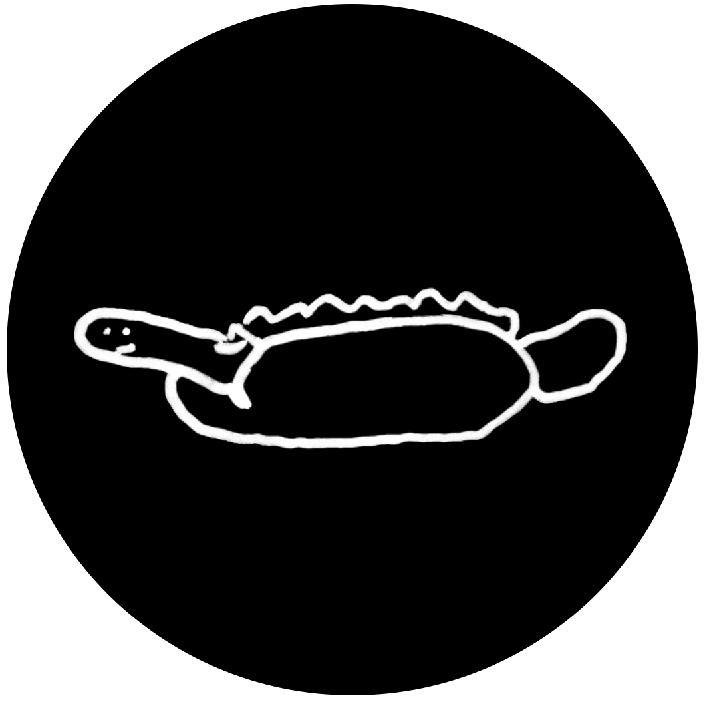

As tempted as I am to show off an acerbic cynicism about all projects of self-revelation, while simultaneously calling attention to a nauseating ritual of mutual narcissistic consolation - anyone reading this might already be more of an ally than that treatment assumes. Maybe it’s time for all of us artists who have hidden themselves away and put their hopes to sleep with the almost comforting dead weight of disappointment, to be a little more honest and brave.
I’m a psychologist, author, and musician. I currently live off grid in a desert wilderness with my small tribe of animals. Most of what I am and have been is clearly legible in my work, for those who know how to read and listen. And yet what I feel is important to say here, is not what I am to myself, but what I want my work to be for a few others.
Teaching is my ultimate passion: I feel more than ever, that there is a small but slowly emerging cadre of young people so nauseated by the bovine comedy of this “first” world, that a tenuous window of spiritual renaissance is hovering in the margins - where once I saw only more reasons to invest in solitude, I now see opportunities for many conversations long overdue.
If you enjoy my work, please consider donating. Every amount makes a difference to me.
